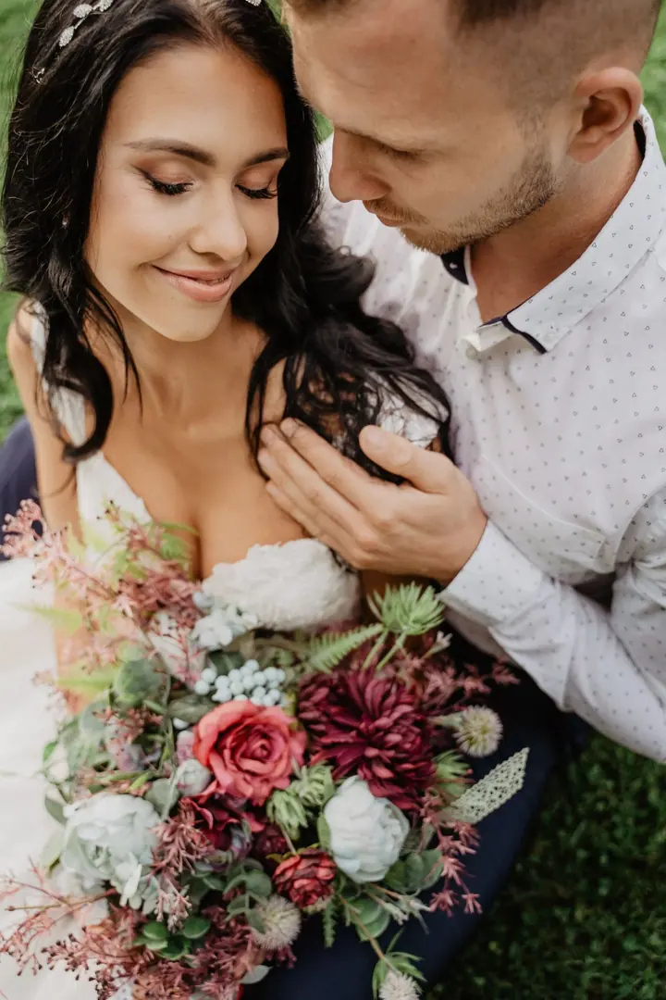
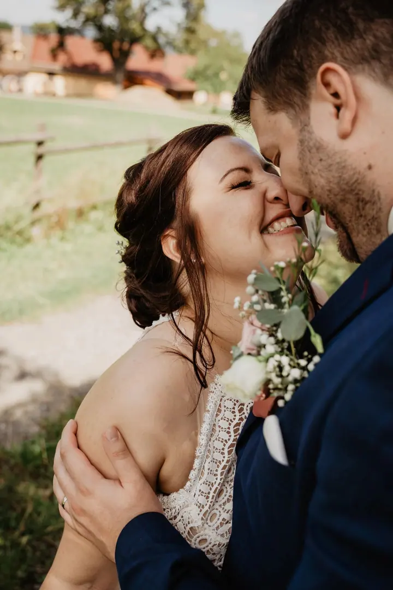

Svatby
Na svatbě jsem součástí dění, aby vám focení nepřipadalo strojené. Když je potřeba, malinko pomůžu k tomu, aby fotky dopadly přesně podle vašich představ.

Jmenuji se Kateřina Žáková, ale klidně mi říkejte Katka. Jsem svatební a rodinná fotografka a fotím hlavně v okolí Pardubic, Kolína a Prahy. Mám ráda přirozené fotky, kt…
Rezervovat termínZaměřuji se na přirozené fotografie plné emocí. Ať jde o svatební den, rodinnou procházku nebo vítání nového člena rodiny, vždycky mi záleží na tom, aby fotky odrážely skutečné chvíle tak, jak je prožíváte.


Na svatbách jsem součástí dění. Nechci, aby vám focení připadalo strojené, ale vím, že někdy je potřeba malinko pomoct, aby výsledek seděl. Rodinné focení je pak o hravosti a pohodě a hledám při něm cestu, jak vás přirozeně zapojit, abyste se cítili dobře.
Fotím především v okolí Pardubic, Kolína a Prahy, ale ráda se vydám i dál. Pokud se vám moje fotky líbí, ozvěte se mi. Budu se těšit na váš příběh.
Co fotím
Na svatbě jsem součástí dění, aby vám focení nepřipadalo strojené. Když je potřeba, malinko pomůžu k tomu, aby fotky dopadly přesně podle vašich představ.
Rodinné focení je hlavně o hravosti a pohodě. Vyrazíme třeba na procházku do parku a zachytíme opravdové chvíle, jak je spolu prožíváte.
Klidné focení v době, kdy se rodina těší na nového člena. Ráda do něj zapojím i partnera a starší sourozence.
Vítání nového člena rodiny v klidu a pohodě. Hledám přirozené chvíle mezi vámi a miminkem.
Postup
Napište mi, co plánujete, kdy a kde. Domluvíme termín a vyberete si balíček, který vám sedí.
Před svatbou se potkáme v klidu u kávy nebo online a probereme, jak má den vypadat. Balíčky pak upřesníme podle vašich představ.
Jsem součástí dění a fotím přirozeně. U rodinného focení si spolu hrajeme a nikam nespěcháme.
Z fotek si vyberete ty, které chcete, a já je pečlivě upravím. Každou další fotku navíc si můžete přidat.
Otázky
Základní balíček na 2 hodiny stojí 7 000 Kč, půldenní na 6 hodin 12 000 Kč a celodenní na 10 hodin 18 000 Kč. Balíčky jsou orientační a upřesníme je podle vašich požadavků.
U základního balíčku minimálně 150 upravených fotografií, u půldenního minimálně 300 a u celodenního minimálně 400.
Malý balíček za 2 300 Kč obsahuje 15 upravených fotografií podle vašeho výběru, velký za 3 900 Kč jich obsahuje 35. Každá další vybraná fotografie stojí 100 Kč.
Fotím hlavně v okolí Pardubic, Kolína a Prahy, ale ráda se vydám i dál. Stačí mi napsat, kde focení plánujete.